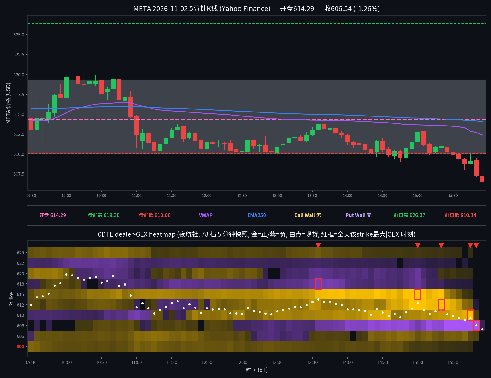

META 日内报告
2026年11月2日 · 周一 · 日内报告
早盘分析
（Junk-man 早盘简报未抓取到，留空待补）
（待补充 Junk-man 当日 #junkman-analysis 原文）
5 分钟 K 线 × 0DTE heatmap
0DTE（2026-11-02到期），夜航社 78 档 5 分钟快照；白点为每档现货位置

heatmap解读（0DTE（2026-11-02到期），夜航社 78 档 5 分钟快照）
GEX 地形图（0DTE（2026-11-02到期），夜航社 78 档 5 分钟快照）：金色=正 gamma 区（做市商对冲减速带/墙），紫色=负 gamma 区（加速带）。白点为每档现货位置。注意：15:50 帧仅剩 6 格、15:55 帧仅剩 607.5 一格，均为 0DTE 到期残值；有效收盘结构以 15:30 帧为准。另注：美东已转 EST，heatmap 窗口按 14:30Z–21:05Z 取全（09:30–15:55 ET）。
- 金色带（15:30有效收盘帧）：612.5(+34.3M)/610(+31.7M)/615(+7.9M)/605(+5.3M)；现价 ±5 点内正节点包围但 607.5 负簇在列
- 紫色带（15:30有效收盘帧）：607.5(-62.0M) 为唯一显著负簇，距收盘价 606.54 仅约 1 点；其余 strike 均已衰减至约 0
- 全天最大节点：607.5(-287.5M@15:50，到期残值；有效峰值 -94.4M@15:40)、615(+89.0M@15:00)、610(+51.8M@15:45)、612.5(+49.6M@15:20)、617.5(-19.2M@13:35)
- 结构特点：总 gamma 开盘 +7.2M → 午间 +20.9M～+35.8M → 15:00 +115.4M（615/612.5/610 正节点钉住峰值）→ 15:30 +16.9M → 15:40 -45.0M（翻负）→ 15:50 -285.8M（残值帧）；上午价格在正 gamma 不足的结构中冲高回落，午后正节点钉住未成、价格破 610 后跌入 607.5 负簇加速；收盘在 VWAP(612.39)下方、EMA250(614.08)下方
全天最大节点 TOP5
一、607.5（午后负簇，15:50 值为到期残值）：全天变化——09:35 -0.8M → 午间 +0.5M～+2.0M（小正值）→ 13:00 -3.9M → 14:00 -25.4M → 14:30 -32.5M → 15:30 -62.0M → 15:40 -94.4M（有效峰值）→ 15:45 -70.8M → 15:50 -287.5M（15:50 帧仅剩 6 格，为 0DTE 到期残值，不作结构读数）→ 15:55 -0.9M（单格残值）；影响时段——午后价格向 610 一带回落、14:35 首收破 610 之后负值逐级加深；影响方式——价格跌入负簇加速：15:30 收 609.90 → 15:55 收 606.54，终根跌破 607.5、收在其下方，全天低 606.41 即出在终根；负簇未把价格托住，反而伴随尾盘最后一段下跌。
二、615（全天增厚的上方正节点，午后未再触及）：全天变化——09:30 +2.1M → 10:30 +10.7M → 12:00 +16.3M → 13:00 +23.8M → 14:00 +37.8M → 14:30 +43.3M → 15:00 +89.0M 峰值 → 15:30 +7.9M → 15:45 0.0M（随到期快速释放）；影响时段——上午价格 10:05 冲 621.69（全天高）后回落，11:00 起价格再未回到 615 上方（11:00 当根高 614.82，12:00 后最高 614.18）；影响方式——被甩在身后的天花板：节点越增厚、价格离它越远，15:00 的 +89.0M 峰值对应的是 15:00 收 612.77 的午后小反弹、而非向 615 的回归；价格破 610 后 615 正节点同步衰减，未形成回拉。
三、610（由负转正的午后承接，收盘前失守）：全天变化——09:30 -2.8M → 11:00 -18.0M（上午负值）→ 12:00 +9.1M（翻正）→ 13:00 +14.7M → 14:30 +34.3M → 15:00 +16.6M → 15:30 +31.7M → 15:45 +51.8M 峰值 → 15:50 +0.7M（到期残值阶段）；影响时段——开盘首根低 610.00 即探 610、午间价格在 610–613 磨时节点翻正增厚；影响方式——先承接后失守：14:35 首收 609.84 跌破 610、14:50–15:00 又收回其上（15:00 收 612.77），但 15:30 收 609.90 再度跌破、终根 606.54 远离——15:45 的峰值出现在价格已在其下方时，属节点滞后增厚、未能把价格拉回 610 上方。
四、612.5（午后钉住节点，钉住失败）：全天变化——09:30 +1.6M → 11:30 -6.4M → 12:30 +6.7M → 13:30 +21.8M → 14:30 +13.0M → 15:00 +48.5M → 15:20 +49.6M 峰值 → 15:30 +34.3M → 15:45 +5.5M → 15:50 约 0（到期释放）；影响时段——午后价格在 610–613 窄幅磨时（14:00–15:20）节点快速增厚；影响方式——钉住未成：15:00 收 612.77 短暂站上 612.5，但价格未在其上站稳，随即回落、节点同步衰减，15:30 后价格一路向 607.5 负簇方向走，612.5 的正节点未能止住尾盘下跌。
五、617.5（上午穿越后留下的负节点，午后未再触及）：全天变化——09:30 -1.1M → 10:00 +1.3M → 11:30 -11.2M → 13:35 -19.2M 峰值 → 15:00 -12.1M → 15:30 -0.1M（衰减消失）；影响时段——上午价格 09:55 收 617.12、10:00 收 619.64 上穿 617.5，10:05 见全天高 621.69，10:55 收 614.67 跌回其下；影响方式——穿越后反成上方负区：价格跌回 617.5 下方后负值加深，但 12:00 后价格最高仅 614.18、从未回测 617.5，负值未兑现为任何方向的加速，13:35 峰值时现货约 611、距其约 6.5 点，属远处负区、只作背景。
亮度口径：p99 截断做上限；红框 = 全天该 strike 最大 |GEX| 时刻；TOP5 排名以全天最大 |GEX| 为准（build_meta_day.py 输出一致）。607.5 的 15:50 峰值为到期残值，正文已注明、有效峰值为 15:40 的 -94.4M。
资金流（0DTE到期2026-11-02，0笔；premium≥$20万｜size≥50｜DTE≤1｜side=B/M/A）
（当日无符合筛子的 flow 记录，或数据未拉取到）
原始 48 笔中 0 笔通过 DTE≤1：48 笔的到期日中根本没有 2026-11-02（当日 0DTE）或 2026-11-03，最近的到期是 2026-11-04（周三，min_dte=2，5 笔）和 2026-11-06（min_dte=4，2 笔），其余为 11-20/11-27/12-18 及 2027–2029 远期/LEAPS；到期分布最多为 2027-02-19（10 笔）。因此今日 flow 一句结论：无符合口径的 0DTE/1DTE 大单，方向读数缺失，不硬凑。原始 48 笔方向分布（仅作背景，不计入 verdict）：at_ask 25 笔 / at_bid 21 笔 / mid 2 笔。
分析总结
价格行为 × 0DTE GEX 结构复盘
① 开盘 614.29（官方；5m 首根开 614.44），较昨收 614.98 仅低开 -0.11%（基本平开，非事件日）；全天 606.41–621.69，收 606.54（-1.37% vs 昨收；收开差 -7.75）。
② 白点轨迹：首根 09:30 宽幅 610.00–619.32（盘中触及盘前高 619.30，收 613.09）→ 09:50 收 617.43 站上前日低 616.80 → 10:00 收 619.64 站上盘前高 619.30 → 10:05 高 621.69（全天高）→ 10:55 收 614.67 跌回前日低下方、此后再未收复 → 午间 610–613 窄磨 → 14:35 首收 609.84 跌破 610 → 15:00 收 612.77 小反弹 → 终根 15:55 收 606.54（全天低 606.41），收在盘前低 610.06 与前日低 616.80 之下。前日高 626.37 全天未触及。
③ 结构：总 gamma 开盘 +7.2M → 午间 +20.9M～+35.8M → 15:00 +115.4M（615/612.5/610 正节点钉住峰值）→ 15:30 +16.9M → 15:40 翻负 -45.0M → 15:50 残值帧；上午冲高回落、午后钉住未成：610 正节点 15:45 仍增厚至 +51.8M 也没能把价格拉回 610 上方，价格最终跌入 607.5 负簇（15:40 有效峰值 -94.4M）加速收低。15:50/15:55 残值帧不作结构读数。
④ Junk-man 简报已核实缺席（见 junkman 字段）：当日分隔线下仅有一条 07:23 MDT 综合批次消息，无独立 META 简报，墙位记 null；收盘算法关键位见明日预测（算法值，非简报墙）。
⑤ 收盘在 VWAP 下方（VWAP 612.39）/ EMA250 下方（EMA250 614.08）。盘前口径说明：Yahoo 当日盘前 bar 只到 08:25（08:30–09:25 缺失，5d/1d 两档重查一致），盘前高 619.30 / 盘前低 610.06 以 04:00–08:25 可用 bar 计，最后可用盘前价为 08:25 收 614.00，09:25 盘前价不可得。
⑥ 资金流：当日无符合口径（premium≥$20万｜size≥50｜DTE≤1）的大单，方向读数缺失（见资金流 verdict）。
K线=Yahoo Finance 5分钟；heatmap=夜航社 dealer-GEX 5分钟快照；heatmap亮度=平方根连续渐变（p99裁剪）。
收盘后的静态快照；页面不在打开时更新行情。